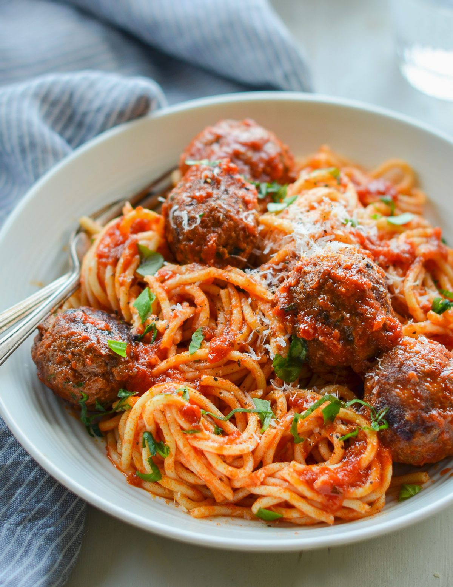

Spaghetti

Ingredients
- Eggs
- Basil
- Ground Beef
- Bread Crumbs
- Parmesan Cheese
- Marinara Sauce
Steps
- Preheat - Preheat the oven to 350°F and set an oven rack in the middle position.
- Egg and Meat Dance - In a large bowl, whisk together the egg, basil, parsley, oregano, salt, pepper, garlic and water. Add the meat, breadcrumbs and cheese and mix until just combined.
- Rollin' - Roll the mixture into golf ball-sized meatballs and place on an ungreased baking sheet. Bake for about 10 minutes, then remove the baking sheet from oven and use a metal spatula to turn the meatballs.
- Hey Marinara - In the meantime, bring the marinara sauce to a simmer in a large skillet. Taste it and adjust the seasoning if necessary (I usually add a healthy pinch of sugar and some freshly ground black pepper). Transfer the browned meatballs to the marinara sauce, leaving the fat behind. Cover loosely with a lid or foil and simmer for about 10 minutes.
- Final Step - While the meatballs are cooking, bring a large pot of well-salted water to a boil. Add the spaghetti and cook until al dente. Drain, then toss with the sauce and meatballs.